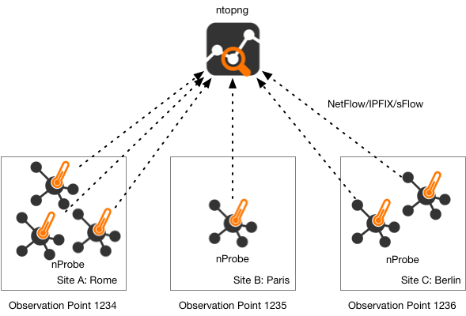
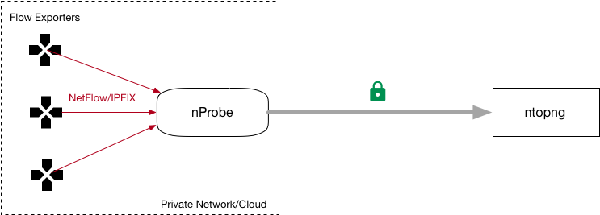

Tuning nProbe Performance
As nProbe can be deployed on very different environments, it is necessary to tune it according to the network where is active. In order to achieve a good probe setup, it is necessary to understand how nProbe is working internally. Each captured packet is analyzed, associated to a flow, and stored onto a hash. Periodically, the hash is analyzed and expired flows are emitted. The hash size is static (-w flag) as this allows nProbe to: Allocate all the needed memory at startup (this is compulsory on embedded systems where memory is limited and it is necessary to know at startup whether a certain application can operate with the available resources). Avoid exhausting all the available memory in case of attacks that can produce several flows. Selecting the hash size is a matter of trade-off between efficiency (an efficient hash is at least 1/3 empty) and memory usage. This statement does not mean that a huge hash is always the solution as the flow export process can be slower (and more CPU cycles are needed) as a large hash needs to be explored.
On the other hand, the hash size is just a part of the problem. In fact, the hash fill percentage can be also controlled by other factors such as:
Reducing the flow lifetime (-t)
Reducing the maximum flow idle time (-d)
Increasing how often the hash is walked searching expired flows (-s)
nProbe allows users to ease the tuning process by printing the status of internal hashes using the –b flag. Users who experience severe nProbe performance problems, packet loss or high CPU usage, should start nProbe with –b in order to find out whether their probe setup is optimal.
High-Speed Flow Collection
Since nProbe 9.2 we have introduced a new command line option --collector-passthrough that is suitable when you want collect flows and send them unchanged to a temote collector. As the flow cache is completely bypassed, the collection speed is greatly enhanced, so this is the best option you can choose for instance when delivering flows to ntopng.
When you need to collect flows at high speed with minimum CPU and memory requirements (this is the case whe collected flows are not stored into the cache but exported immediately), you should consider cache bypassing. In particular this is achieved with the –collector-passthrough option. Please refer to the “nProbe Case Study” section of this manual for further information about this topic.
Expected Collection Performance
nProbe has been enhacend with a new command line option --simulate-collection that allows to simulate infinite flow ingress to measure the top collection speed. The current performance numbers have been reported on this blog post and can be as high as 300 Kfps (collection only) or 183 Kfps when speaking with ntopng via ZMQ.
Collecting Flows from Many Routers
When nProbe is used to colelct flows from many routers, it is important to label the flow according to the location it originates from. In particular in large networks, locations are spread across multiple sites, so identifying the flow source using the IP address of the probe is not often possible. For this reason nProbe implements the observation point concept.

It allows you to mark flows according to their source regardless of the IP address of the probe originating them. You can read more about this topic on this blog post
Handling Trillion Flows: Dumping Flows into ClickHouse
nProbe Enterprise M/L can natively dump flows into the ClickHouse open source database. Due to the nature of ClickHouse, data import happens in batches using a syntax similar to MySQL dump, namely --clickhouse=<host[@port]>:<dbname>:<prefix>:<user>:<pw> You can read more about this topic on this blog post
Data Deduplication
There are many reasons for which the information we collect cam be duplicated, including routing, redundant paths, backup devices. nProbe provides you advanced features for data deduplication:
When you have duplicated packets you can use the option
--enable-ipv4-deduplicationto discard consecutive duplicated IPv4 packets. Note that retransmissions might be exchanged (if consecutive) for duplicationsDuring collection you can use
--flow-collection-deduplicationto instruct nProbe to discard collected flows with the same flow key (usually VLAN/protocol/IP src/IP dst/port src/port dst) observed bytwo exporters sending flows to the same nProbe. You can read more on the ntopng user’s guide about flow deduplication in ntopng (you can combine deduplication on both sides).
SNMP Interfaces Polling
Flow collectors such as ntopng, can map numeric interfaceId exported by NetFlow/IPFIX to interface names via SNMP. This requires the collector being able to poll via SNMP the interface names of the flow exporters (i.e. when nProbe is used in collector mode) or poll via SNMP the host where nProbe is running (nProbe probe mode).

Sometimes this practice is not possible (e.g. when nProbe is behind a firewall and exports flows to ntopng deployed on the Internet), and a workaround has to be identified in order to allow the collector to map interface id to names. This solution works when nProbe is used with ntopng. In this case you can:
Poll the interface names via SNMP and save their name in a text file
Use the
--snmp-mappingsoption in order to let nProbe know the interface namesSuch names are propagated to ntopng via ZMQ (i.e. do not forget to specify
--zmq)
The --snmp-mappings option specifies the path of a text file containing the interface names of all flow exporters collected by nProbe (collector mode), or of the host where nProbe is active (probe mode). The file format is pretty straightforwar:
# AgentIP ifIndex ifName
#
127.0.0.1 1 lo0
127.0.0.1 2 gif0
127.0.0.1 3 stf0
127.0.0.1 4 en0
127.0.0.1 5 en1
127.0.0.1 6 en2
192.168.1.1 11 utun0
192.168.1.1 12 utun1
192.168.1.1 13 utun2
192.168.1.1 14 utun3
The first column is the flow exporter IP address, the second is the SNMP interface Id, and the last column the SNMP interface name.
In order to ease the creation of such file, the nProbe package comes with a companion tool /usr/bin/build_snmp_mappings.sh that you can use to create such file by polling the router via SNMP. The tool syntax is traightforward as shown below:
$ /usr/bin/build_snmp_mappings.sh
Usage: build_snmp_mappings.sh <SNMP agent IP> <SNMP version 1|2c> <SNMP community>
Example: build_snmp_mappings.sh 127.0.0.1 2c public > snmp_mappings.txt
nprobe --snmp-mappings snmp_mappings.txt ...
$ /usr/bin/build_snmp_mappings.sh 127.0.0.1 2c public > snmp_mappings.txt
$ cat snmp_mappings.txt
127.0.0.1 1 lo0
127.0.0.1 2 gif0
127.0.0.1 3 stf0
127.0.0.1 4 EHC250
127.0.0.1 5 EHC253
127.0.0.1 6 en0
127.0.0.1 7 en3
127.0.0.1 8 en1
127.0.0.1 9 p2p0
127.0.0.1 10 fw0
127.0.0.1 11 utun0
# Agent InterfaceId Name
Note that the SNMP mapping file:
Needs to contain interfaces of all the flow exporters in order ntopng to be able to map interface names properly.
In case you modify the mappings file, you need to restart nProbe in order to reload it.
Interface names is sent periodically to ntopng via ZMQ.
Furthermore:
If ntopng polls flow exporters via SNMP, please make sure that the SNMP mapping file does not contain information about the same flow exporters as the existing information will be overwritten.
If possible, please prefer ntopng poll the flow exporter via SNMP instead of using
--snmp-mappingsas ntopng will be able to fetch additional interface information other than the interface name.
Note
In flow-based traffic analysis, network interfaces are indentified by numeric identifiers. In nProbe you can set the input (i.e. from which packets are received) interface id with -u, amd the output interface id with -Q. If in the above example you start nprobe -i en3 ... when as en3 has interface id 7, then your command line should be nprobe -i en3 -u 7 -Q 7 .....
Usage Example
nProbe collects packets from interface en3 and sends them to ntopng
nprobe --snmp-mappings snmp_mappings.txt -i en3 --ntopng zmq://127.0.0.1:1234 -t 3 -d 3 -b 2 -u 7 -Q 7
ntopng -i zmq://127.0.0.1:1234
As you can see in the figure below, ntopng natively detects the inerface id

and maps it also inside the flow details page

Note
In the above example we have used ZMQ as communication protocol between nProbe and ntopng, but the same results can be obtained using Kakfa instead.
Collecting nTap Traffic
nProbe Enterprise M (or better) feature native nTap support meaning that it can collect nTap traffic without a separate nTap license. This means that nProbe can collect in a secure way traffic originated in remote hosts/containers/VMs sent to it using end-to-end encryption. Below you can find an example of the commands you need to run in order to collect nTap packets. Suppose to start nProbe on host 1.2.3.4 and let it listen on port 1234, and encrypt traffic with key ‘hello’. You can start the applications as follows:
[nProbe Enterprise M/L host] nprobe -3 1234 -n none –ntap hello …
[remote host we want we want to monitor] tap -i eth0 -c 1.2.3.4:1234 -k hello
Instead if you have nProbe Pro/Enterprise L, you need the nTap license in order to enable the nTap collector that creates a virtual interface named ntap0 in the example below:
[nProbe host] collector -p 1234 -k hello -i ntap0
[nProbe host] nProbe -i ntap0 …
[remote host we want we want to monitor] tap -i eth0 -c 1.2.3.4:1234 -k hello
InfluxDB-based Timeseries Dump
nProbe is able to dump in the line format (used by InfluxDB) timeseries about its internals. In essence it is similar to -b 1 but instead of dumping stats on the screen they are written on a timeseries file that can be imported in InfluxDB. In order to enable timeseries dump, you need to use --influxdb-dump-dir <dir> that allows you to specify where timeseries are saved. nProbe creates a timeseries file per minute. Upon dump completion, using --influxdb-exec-cmd <cmd> you can run a command file for importing the dumped file InfluxDB 1.x
$ cat influx_upload.sh
#!/bin/bash
FILENAME=$1
DBNAME=ntop
curl -XPOST "http://localhost:8086/write?db=$DBNAME" --data-binary @$FILENAME
/bin/rm $FILENAME
Note that you need to adapt the above script in case you have authentication or use Influx 2.x.
Example you can start nProbe as follows nprobe -i eth0 --influxdb-dump-dir /tmp/influx `--influxdb-exec-cmd influx_upload.sh in order to dump timeseries and import them automatically into the specified database.
HowTo Create sFlow Timeseries
When used in collector mode, nProbe can collect both NetFlow and sFlow traffic. In the case of sFlow, your device can export:
packet samples: they are used by nProbe to create flows.
counter samples: in essence they are SNMP MIB-II interface counters sent via sFlow instead of SNMP.
Counter samples are ignored by nProbe unless --influxdb-dump-dir <dir> is used. In this case nProbe will dump these counters in InfluxDB line format that can be imported --influxdb-exec-cmd <cmd> as described above. This way nProbe will create
sflow,deviceIP=192.168.2.1,ifIndex=9 ifInOctets=0,ifInPackets=0,ifInErrors=0,ifOutOctets=714615609544,ifOutPackets=591251324,ifOutErrors=0 1656403323000000000
sflow,deviceIP=192.168.2.1,ifIndex=9 ifInOctets=178297744,ifInPackets=2573381,ifInErrors=0,ifOutOctets=0,ifOutPackets=0,ifOutErrors=0 1656403332000000000
sflow,deviceIP=192.168.2.1,ifIndex=9 ifInOctets=178297744,ifInPackets=2573381,ifInErrors=0,ifOutOctets=0,ifOutPackets=0,ifOutErrors=0 1656403332000000000
that can be imported in InfluxDB and depicted with tools such as Grafana.
Flow Relay
Sometimes you need to collect (using a host in the private network) flows (over UDP) from devices located on the Internet/DMZ, and you want to avoid making a hole in your firewall for security reasons. In this case you need a flow relay that is basically an application deployed on the public Internet that acts as a rendez-vous point:
your Internet devices will send flows (sFlow/NetFlow/IPFIX) to the relay
your nProbe, deployed on the private LAN, will connect to the relay via (encrypted) ZMQ and receive the flows
This way you can collect flows from the private network without the need to create security weaknesses. The flowRelay application is part of the nProbe package and it works as follows
Welcome to flowRelay v1.0: sFlow/NetFlow/IPFIX flow relay
Copyright 2019-2022 ntop.org
flowRelay [-v] [-h] -z <ZMQ enpoint>] -c <port>
-z <ZMQ enpoint> | Where to connect to or accept connections from.
| Examples:
| -z tcp://*:5556c [collector mode]
-c <port> | Flow collection port
-k <ZMQ key> | ZMQ encryption public key
-v | Verbose
-h | Help
Suppose to have deploy the flowRelay on host with public IP a.b.c.d listening for incoming flows on port 2055, and nProbe on host 192.168.2.23. All you need to do is:
[host a.b.c.d]
flowRelay -c 2055 -z "tcp://a.b.c.d:1234c"[host 192.168.2.23]
nprobe -i none -n none --collector-port tcp://a.b.c.d:1234
Flow Replication / Fanout
Sometimes (e.g. when you migrate to nProbe but you need to keep running your legacy monitoring system) you need to collect flows and send them to *multiple* collectors. Without using expensive software solutions, nProbe users have a turn-key solution available out of the box named nfFanout. This application allows you to collect flows (sFlow/NetFlow/IPFIX) over UDP and send them to multiple collectors simultaneously.
Copyright (C) 2010-22 ntop.org
Usage: nfFanout -c <port> -a <collector IPv4:port> [-a <collector IPv4:port>]*
[-v] [-V] [-r] [-h]
-c <port> | UDP port where incoming flows are received
-a <collector IP:port> | Address:port where to send collected flows to
-r | Use round-robin instead of fan-out
-v | Enable verbose logging
-V | Show application version
-h | Print this help
Using it is pretty straightforward. Suppose you need to collect flows on port 2055 and send them to two collectors 192.168.0.1:1234 and 192.168.0.2:1234. All you need to do is to start the following command nfFanout -c 2055 -a 192.168.0.1:1234 -a 192.168.0.2:1234.
Dumping Collected Flows/Packets
When nProbe collects data (both sFlow/NetFlow/IPFIX and nTap), it immediately discards collected data after processing. However sometimes it is useful to dump such data. A typical use-case include:
nProbe collects packets sent by ntap_remove
nProbe collects flows exported by a switch/router
Probe can dump collected data to a virtual network interface on top of which applications such as n2disk or tcpdump can be enabled. This can be enabled with --dump-collected-pkts <interface> for dumping collected data onto the specified network interface. In case of nTap raw collectd packets are dumped “as is” to the interface, whereas collected flows are dumped with a dummy ethernet/IP/UDP header.
You can dump packets onto an existing host ethernet interface (e.g. eth0), or you can create (on Linux) a dummy ethernet interface using:
$ sudo ip link add rec0 type dummy
$ sudo ifconfig rec0 up
you can dump nTap collected packet with:
[host a.b.c.d]
$ sudo nprobe --dump-collected-pkts rec0 -3 5678 --ntap hello[host f.g.h.i]
$ sudo ntap_remote -i eno1 -c a.b.c.d:5678 -k hello
or dump collected flows on port 2055 using:
$ sudo nprobe --dump-collected-pkts rec0 -3 2055
Note that in case you use ntopng with n2disk (e.g. ntopng bundle) you can configure ntopng to enable n2disk on the selected interface as described on the ntopng manual.